Einführung
Dein erster Griffweg der Dur-Pentatonik.
Du lernst die Dur-Pentatonik und Dur-Tonleiter kennen, verschiebst ihre Muster in andere Tonarten und begleitest mit einzelnen Tönen und Powerchords.
Der Kurs baut auf den mechanischen Grundlagen des Gitarrenspiels auf. Arbeite bei Bedarf zuerst den Kurs Mechanische Grundlagen durch.
Kapitel 01
Die Dur-Pentatonik kennenlernen.
Lektion 01
Die erste Oktave in Dur-Position 1.
Hier lernst du die erste Position der Dur-Pentatonik kennen. Das Muster ist in jeder Tonart gleich; nur der Bund, in dem wir starten, ändert sich. Als Beispiel verwenden wir C-Dur. Konzentriere dich zunächst darauf, die Töne der ersten Oktave zu greifen und den Grundton C auf der tiefen E-Saite wiederzufinden.
Jeder Finger bekommt einen Bund und behält diesen Bund bei; beim Spielen wechselt er nur die Saite. Die Reihenfolge lautet Z–M–R–K: Zeigefinger, Mittelfinger, Ringfinger, kleiner Finger. Das lernst du in der Spinne kennen. Der Kurs Mechanische Grundlagen macht diesen Einstieg und die Fingersätze deutlich leichter.
Du kannst dieselben Töne auch als Tonstufen und Intervalle benennen: C = 1 = Prime, D = 2 = große Sekunde, E = 3 = große Terz, G = 5 = Quinte, A = 6 = Sexte. Die Zahl beschreibt die Stufe beziehungsweise den Abstand vom Grundton C.
Die Grafik zeigt die Tonstufen. Die Notennamen kannst du einblenden.
Übung 1.1 · Kleine Melodien in der ersten Oktave
- Spiele 1–2–3–2–1 (C–D–E–D–C) langsam aufwärts und zurück.
- Spiele 1–3–5–3–1 (C–E–G–E–C).
- Spiele 5–6–8–6–5 (G–A–C–A–G).
- Singe jede Melodie beim Spielen mit und präge dir ihren Klang ein.
- Spiele die Melodien aufwärts und abwärts gleichmäßig mit Metronom. Beginne langsam.
Achte auf den Fingersatz und auf möglichst wenig unnötige Spannung. Erst wenn die Bewegung gleichmäßig und entspannt bleibt, erhöhst du das Tempo.
Lektion 02
Die zweite Oktave ergänzen.
In derselben Dur-Position 1 spielst du nun zwei Oktaven. Es sind dieselben Töne und dieselben Abstände: Das Muster C–D–E–G–A–C wiederholt sich eine Oktave höher. Eine rote Kontur fasst den neuen Griffweg der zweiten Oktave zusammen.
Übung 2.1 · Kleine Melodien in der zweiten Oktave
- Spiele 1–2–3–2–1 (C–D–E–D–C) eine Oktave höher.
- Spiele 1–3–5–3–1 (C–E–G–E–C).
- Spiele 5–6–8–6–5 (G–A–C–A–G).
- Singe jede Melodie mit und präge dir die höhere Lage ein.
- Spiele die Melodien aufwärts und abwärts mit Metronom.
Übung 2.2 · Beide Oktaven verbinden
Spiele nun durchgehend aufwärts: 1–2–3–5–6–8–2–3–5–6–8 (C–D–E–G–A–C–D–E–G–A–C). Kehre anschließend auf demselben Weg zurück. Das C in der Mitte verbindet beide Oktaven. Singe die Folge zuerst mit und spiele sie dann gleichmäßig mit Metronom.
Lektion 03
Die Dur-Pentatonik in anderen Tonarten spielen.
Das Griffmuster bleibt gleich. Für eine andere Dur-Tonart verschiebst du es so, dass der Grundton auf der tiefen E-Saite den neuen Tonartnamen zeigt. Wir bleiben bei derselben Form und beginnen jetzt einmal auf A und einmal auf G.
Der Grundkurs „Noten auf dem Griffbrett finden“ hilft dir, die neuen Grundtöne auf der E-Saite schnell zu finden. Das macht das Verschieben des Musters deutlich leichter.
Übung 3.1 · A-Dur-Pentatonik
Verschiebe das Muster so, dass du auf der tiefen E-Saite mit A im fünften Bund beginnst. Spiele A–B–C#–E–F#–A aufwärts und zurück. Singe die Töne mit und präge dir den Klang von A als Grundton ein.
Ansicht: Notennamen oder Tonstufen.
Übung 3.2 · G-Dur-Pentatonik
Verschiebe dasselbe Muster so, dass du auf der tiefen E-Saite mit G im dritten Bund beginnst. Spiele G–A–B–D–E–G aufwärts und zurück. Singe wieder mit und achte darauf, dass G jetzt der Ruhepunkt ist.
Ansicht: Notennamen oder Tonstufen.
Kapitel 02
Dur-Tonleiter kennenlernen.
Lektion 01
Von der Pentatonik zur Dur-Tonleiter.
Eine Dur-Tonleiter hat sieben verschiedene Töne. Danach beginnt die Folge in der nächsten Oktave wieder von vorn. C-Dur lautet C–D–E–F–G–A–B–C. Du kannst die Reihe auch als 1–2–3–4–5–6–7–1 lesen: 1–2–3–4–5–6–7 entspricht C–D–E–F–G–A–B. Die ausgeschriebenen Intervallnamen dazu sind Prime, Sekunde, große Terz, Quarte, Quinte, Sexte und Septime. Die Zahl benennt die Tonstufe und den Abstand vom Grundton. Die Halbtonschritte liegen zwischen der 3. und 4. Note (E–F) sowie zwischen der 7. und 8. Note (B–C). Auf dem Klavier sind das die weißen Tasten von C bis zum nächsten C:
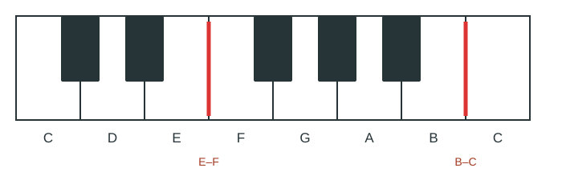
Im Kurs Tonleitern und melodischer Aufbau lernst du Tonleitern ausführlicher kennen. Diese Einheit fällt dir leichter, wenn du den Kurs vorher gelesen hast.
Vielleicht ist dir aufgefallen: Die Dur-Pentatonik nutzt nur fünf Töne statt sieben. C-Dur-Pentatonik: C–D–E–G–A. C-Dur-Tonleiter: C–D–E–F–G–A–B. Es fehlen also F und B. F liegt einen Halbton über E; B liegt einen Halbton unter dem nächsten C.
Übung 1.1 · F und B ergänzen
Wähle „F und B einblenden“, um die zwei fehlenden Töne in derselben Griffbrettgrafik zu sehen. Wir ergänzen zunächst nur die tiefe Oktave. Der Fingersatz folgt weiter der Regel: Jeder Finger hat seinen Bund und wechselt nur die Saite.
Die Grafik zeigt zunächst nur die fünf Töne der Dur-Pentatonik.
Spiele C–D–E–F–G–A–B–C zunächst ohne festes Timing aufwärts und abwärts. Achte auf den Fingersatz, eine entspannte Hand und gleichmäßigen Druck.
Übung 1.2 · Kinderlied-Melodien in der ersten Oktave
Spiele die kurzen Melodieausschnitte und singe sie danach mit. Jedes Beispiel zeigt die Noten im Violinschlüssel und darunter die passende Tabulatur. Auf der Gitarre klingt die notierte Melodie eine Oktave tiefer.
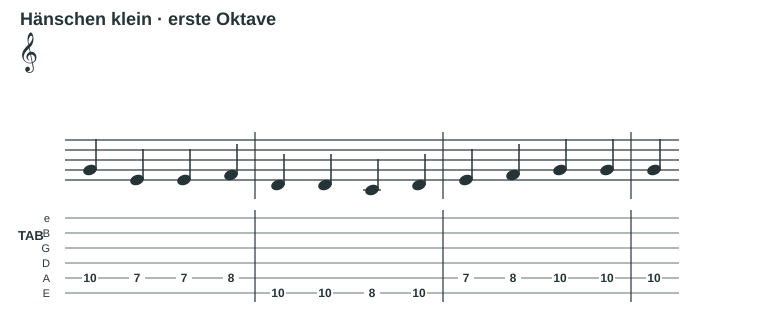
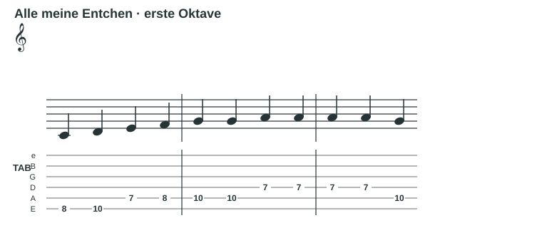
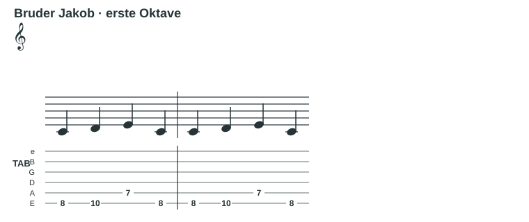
Übung 1.3 · F und B in der zweiten Oktave
Nun sind auch die fehlenden Töne in der zweiten Oktave ergänzt. F und B sind wieder rot umrandet.
Übung 1.4 · Dieselben Melodien in der zweiten Oktave
Spiele und singe dieselben Ausschnitte nun eine Oktave höher. Lies die Notation und vergleiche sie mit den Griffen in der Tabulatur.
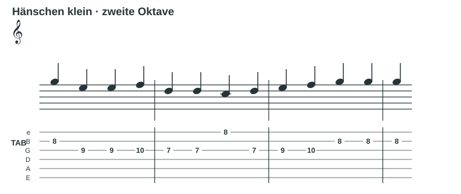
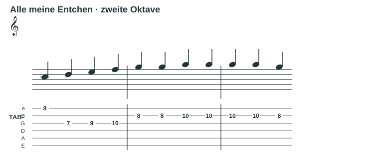
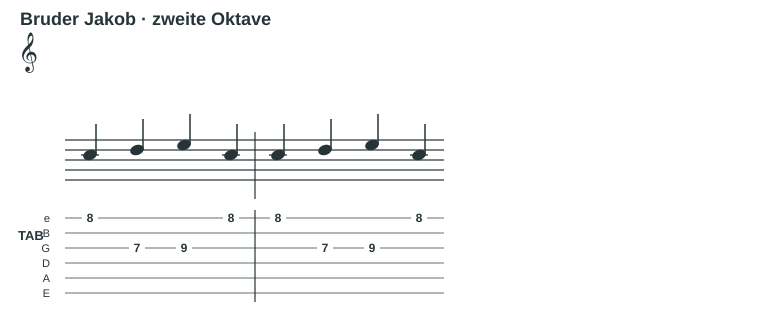
Lektion 02
Die Dur-Tonleiter in anderen Tonarten spielen.
Auch bei der vollständigen Dur-Tonleiter bleibt die Griffwegform gleich. Verschiebe das Muster so, dass der Grundton auf der tiefen E-Saite zum gewünschten Tonartnamen passt. Die zusätzlichen Töne der Dur-Tonleiter rücken mit dem Muster mit.
Übung 2.1 · A-Dur-Tonleiter
Beginne mit A im fünften Bund der tiefen E-Saite. Spiele A–B–C#–D–E–F#–G#–A aufwärts und zurück. Achte auf die beiden Halbtonschritte zwischen C#–D und G#–A.
Ansicht: Notennamen oder Tonstufen.
Übung 2.2 · G-Dur-Tonleiter
Beginne mit G im dritten Bund der tiefen E-Saite. Spiele G–A–B–C–D–E–F#–G aufwärts und zurück. Achte auf die Halbtonschritte zwischen B–C und F#–G.
Ansicht: Notennamen oder Tonstufen.
Präge dir für jede Tonart zuerst den Grundton auf der tiefen E-Saite ein. Dann verschiebst du das gelernte Muster und spielst die Tonleiter langsam aufwärts und abwärts.
Lektion 03
Lieder: Akkordgrundtöne in der Dur-Tonleiter.
Jetzt wenden wir die Tonleiter an Liedern an. Achte auf den gerade klingenden Akkord und finde dessen Grundton. Spiele oder singe diesen einzelnen Ton aus der Dur-Tonleiter mit. Du musst dafür zunächst weder den Akkord selbst greifen noch die ganze Melodie nachspielen. Spiele die Akkordgrundtöne zunächst nur mit dem Zeigefinger. So übst du, die Tonart und die Bewegung der Grundtöne auf dem Griffbrett zu verfolgen. Das bereitet dich auf die Powerchords im nächsten Kapitel vor.
Die Tabelle nennt zu jedem Lied eine Tonart und die Grundtöne einer vereinfachten Akkordfolge. Die römischen Zahlen zeigen zusätzlich die Stufenfolge. Finde die Tonart beim Hören zuerst selbst und gleiche sie danach mit der Tabelle ab.
Akkordstufen werden oft mit römischen Zahlen geschrieben. Sie entsprechen den arabischen Zahlen der Tonleiter: I = 1, ii = 2, iii = 3, IV = 4, V = 5, vi = 6, vii° = 7. Fürs Erste kannst du Groß- und Kleinschreibung sowie das Zeichen ° ignorieren und nur die Zahl lesen. Später wird die Schreibweise wichtig: Sie zeigt, ob der Akkord auf der Stufe Dur, Moll oder vermindert ist. In einer Dur-Tonleiter lautet die Folge: I Dur, ii Moll, iii Moll, IV Dur, V Dur, vi Moll, vii° vermindert. Das sind die Akkordarten, die wir beim Bilden der Akkorde aus der Dur-Tonleiter kennengelernt haben.
- Höre ein Lied oder eine einfache Akkordbegleitung.
- Verfolge den Akkordwechsel und bestimme die Stufe.
- Spiele zu jedem Akkord nur dessen Grundton als einzelne Note. Nutze dafür das Dur-Muster, verschiebe es zum Grundton der gefundenen Tonart und folge den Akkordwechseln.
- Singe die Folge mit und achte darauf, wie sich die Stufen innerhalb der gefundenen Tonart bewegen.
Finde beim Hören zuerst selbst die Tonart und die Grundtöne der Akkorde. Vergleiche deine Vermutung anschließend mit der Tabelle. Die Angaben nennen eine vereinfachte Akkordfolge, die Tonart und die dazugehörigen Grundtöne der Aufnahme. Je nach Aufnahme oder Arrangement können einzelne Akkorde abweichen. Spiele die Grundtöne mit dem Dur-Muster in der gefundenen Tonart.
| Jahr | Lied | Interpret | Tonart | Vereinfachte Stufenfolge | Akkordgrundtöne |
|---|---|---|---|---|---|
| 1950er | |||||
| 1958 | La Bamba | Ritchie Valens | C-Dur | I–IV–V | C–F–G |
| 1960er | |||||
| 1961 | Stand by Me | Ben E. King | A-Dur | I–vi–IV–V | A–F#–D–E |
| 1962 | Love Me Do | The Beatles | G-Dur | I–IV–V | G–C–D |
| 1965 | I Got You (I Feel Good) | James Brown | D-Dur | I–IV–V | D–G–A |
| 1969 | I Want You Back | The Jackson 5 | Ab-Dur | I–IV–vi–V–ii | Ab–Db–F–Eb–Bb |
| 1970er | |||||
| 1971 | Take Me Home, Country Roads | John Denver | G-Dur | I–vi–IV–V | G–E–C–D |
| 1974 | No Woman, No Cry | Bob Marley & The Wailers | C-Dur | I–V–vi–IV | C–G–A–F |
| 1977 | Three Little Birds | Bob Marley & The Wailers | A-Dur | I–IV–V | A–D–E |
| 1978 | Rivers of Babylon | The Melodians | C-Dur | I–V–IV–vi | C–G–F–A |
| 1980er | |||||
| 1980 | Redemption Song | Bob Marley & The Wailers | G-Dur | I–vi–IV–ii–V | G–E–C–A–D |
| 1983 | Every Breath You Take | The Police | Ab-Dur | I–vi–IV–V | Ab–F–Db–Eb |
| 1988 | Don’t Worry, Be Happy | Bobby McFerrin | B-Dur | I–ii–IV | B–C#–E |
| 1988 | I’m Gonna Be (500 Miles) | The Proclaimers | E-Dur | I–IV–V–vi | E–A–B–C# |
| 1990er | |||||
| 1997 | MMMBop | Hanson | A-Dur | I–V–IV | A–E–D |
| 1997 | Torn | Natalie Imbruglia | A-Dur | vi–IV–I–V | F#–D–A–E |
| 2000er | |||||
| 2001 | Wherever You Will Go | The Calling | A-Dur | I–V–vi–IV | A–E–F#–D |
| 2006 | Chasing Cars | Snow Patrol | A-Dur | I–V–IV | A–E–D |
| 2008 | I’m Yours | Jason Mraz | B-Dur | I–V–vi–IV | B–F#–G#–E |
| 2008 | Viva la Vida | Coldplay | Ab-Dur | IV–V–I–vi | Db–Eb–Ab–F |
| 2009 | Hey, Soul Sister | Train | E-Dur | I–V–vi–IV | E–B–C#–A |
| 2010er | |||||
| 2013 | Rude | MAGIC! | Bb-Dur | IV–V–I–vi | Eb–F–Bb–G |
| 2014 | Budapest | George Ezra | F-Dur | I–IV–V | F–Bb–C |
| 2014 | Shut Up and Dance | WALK THE MOON | D-Dur | I–IV–V–vi | D–G–A–B |
| 2014 | All of the Stars | Ed Sheeran | Bb-Dur | IV–I–vi–V | Eb–Bb–G–F |
| 2012 | Ho Hey | The Lumineers | C-Dur | I–IV–vi–V | C–F–A–G |
| 2017 | Perfect | Ed Sheeran | Ab-Dur | I–vi–IV–V | Ab–F–Db–Eb |
| 2018 | Shotgun | George Ezra | A-Dur | I–IV–vi–V | A–D–F#–E |
| 2020er | |||||
| 2022 | As It Was | Harry Styles | C-Dur | IV–ii–V–I | F–D–G–C |
| 2022 | Anti-Hero | Taylor Swift | E-Dur | IV–I–V–vi | A–E–B–C# |
| 2024 | I Had Some Help | Post Malone feat. Morgan Wallen | A-Dur | IV–I–vi–V | D–A–F#–E |
Bei Songs mit mehr als vier Akkorden kannst du zunächst nur die Grundfolge üben. Eine andere Tonart ändert die Tonstufenfolge nicht; sie verschiebt nur die konkreten Notennamen.
Quellen und Hörbeispiele
- TrueFire · Pop-Songs mit vereinfachten Akkordfolgen – Songauswahl und Stufenfolgen von Klassikern bis zu neueren Songs.
- GuitarHabits · Vier-Akkord-Songs – Beispiele und Erklärung, wie Stufenfolgen in verschiedene Tonarten übertragen werden.
- Fender Play · Knockin’ on Heaven’s Door – Beispiel für eine vereinfachte Akkordfassung.
- Dummies · La Bamba – Beispiel für eine einfache I–IV–V-Folge.
- Music Will · I Had Some Help – Beispiel für ein vereinfachtes Unterrichtsarrangement.
Kapitel 03
Powerchords · begleiten mit Grundton und Quinte.
Lektion 01
Der Grundton und seine Quinte.
Du kannst ein Lied begleiten, indem du zunächst nur den Grundton spielst. Für einen volleren Klang kannst du den Grundton zusammen mit seiner Quinte spielen. Dieser Zweiklang heißt in der Gitarrenwelt Powerchord.
Ein Powerchord enthält keine Terz. Darum musst du nicht entscheiden, ob der Akkord Dur oder Moll ist. Für den Einstieg gibt es drei grundlegende Griffbilder, die sich am Grundton auf unterschiedlichen Saiten orientieren.
Hier liegt der Grundton C auf der tiefen E-Saite im 8. Bund. Seine Quinte G liegt auf der A-Saite im 10. Bund. Zusammen erklingen sie als C5.
1. Stufe · C5
Die C-Dur-Tonleiter als Powerchord-Folge: ein Powerchord pro Viertelschlag. Die Gitarrennotation im Violinschlüssel klingt eine Oktave tiefer.
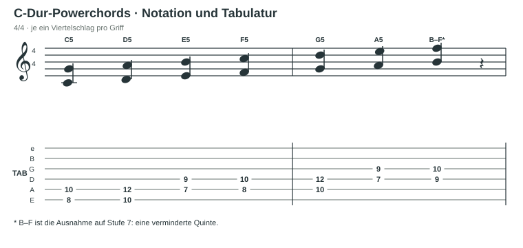
Die 7. Stufe ist eine Ausnahme: In C-Dur liegen zwischen B und F keine reine Quinte, sondern eine verminderte Quinte. Deshalb spielst du hier B–F statt eines gewöhnlichen Powerchords. Wenn dich der Aufbau interessiert, findest du eine ausführlichere Erklärung in Akkorde 2 · Lektion 02. Für jetzt reicht es, dir den besonderen Klang und den Griff zu merken.
Übung 1.1 · Grundton allein und mit Quinte
- Spiele C allein auf der tiefen E-Saite im 8. Bund.
- Spiele danach C und G zusammen als C5.
- Wechsle langsam zwischen dem einzelnen Grundton und dem Powerchord. Achte darauf, dass beide Töne gleichmäßig erklingen.
Übung 1.2 · Ein Lied mit Powerchords begleiten
Nimm dasselbe Lied, das du in Kapitel 02 ausgewählt hast. Spiele bei jedem Akkordwechsel statt nur des Grundtons den passenden Powerchord. Halte dich zunächst an den einfachen Rhythmus des Liedes. Beim Akkord auf der 7. Stufe verwendest du den Sondergriff B–F.
Lektion 02
Powerchords um eine Oktave erweitern.
Du hast gelernt, Akkordstufen als Powerchords darzustellen. So musst du dir zunächst keine Gedanken über die Akkordart machen: Bis auf die 7. Stufe bleibt der Griff gleich.
Nun erweitern wir den Griff um die 8. Sie ist keine neue Note, sondern eine Wiederholung des Grundtons eine Oktave höher. Dadurch klingt der Powerchord größer und kräftiger, wird aber harmonisch nicht komplizierter und bleibt universell einsetzbar. Den zusätzlichen Ton spielst du mit dem kleinen Finger.
Wähle eine Stufe. In der Grafik leuchten nun Grundton, Quinte und Oktave gemeinsam auf.
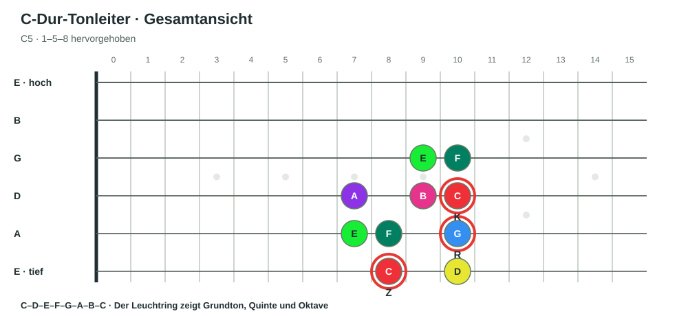
1. Stufe · C5 · E-Saite Bund 8, A-Saite Bund 10, D-Saite Bund 10.
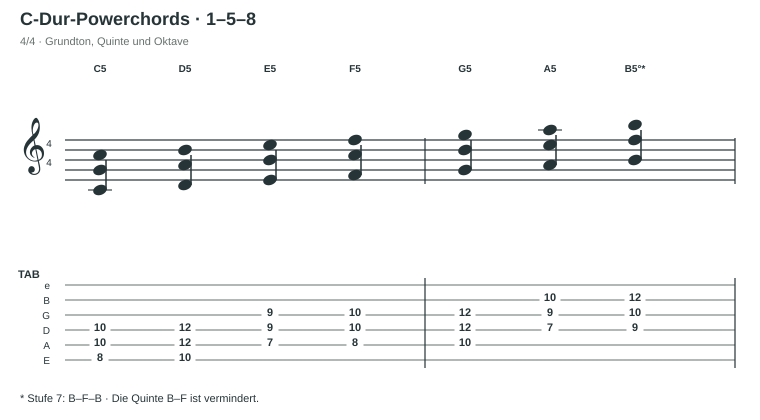
Übung 2.1 · Den Klang vergleichen
- Spiele einen Powerchord zuerst als 1–5 und danach als 1–5–8.
- Vergleiche, wie die Oktave den Klang voller macht, ohne eine neue Tonstufe hinzuzufügen.
- Wähle die Stufen 1 bis 6 und spiele jeden Griff langsam. Bei Stufe 7 merkst du dir den Sondergriff B–F–B.
Übung 2.2 · Deinen Song mit der größeren Form begleiten
Spiele noch einmal dasselbe Lied aus Kapitel 02. Begleite jeden Akkordwechsel diesmal mit dem passenden erweiterten Powerchord 1–5–8. Spiele zunächst langsam und achte darauf, dass alle drei Töne gleichmäßig erklingen. Auf der 7. Stufe verwendest du den Sondergriff B–F–B.